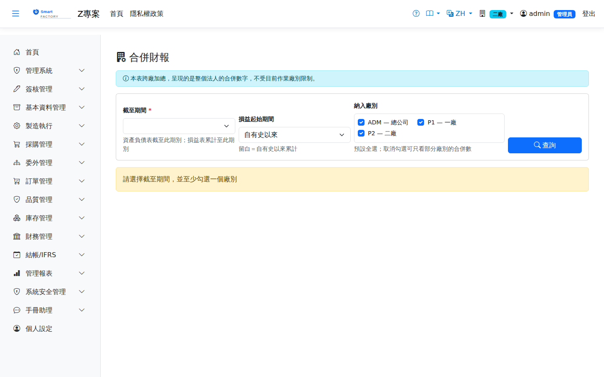

合併財報Consolidated Statements
路由：/ConsolidatedStatement | 跨廠彙總的合併資產負債表與合併損益表Route: /ConsolidatedStatement | Balance sheet and P&L summed across plants
系統的會計期間、月結、資產負債表、損益表都依廠別分開，各廠的月結進度本來就可以不同。多個廠屬於同一法人時，對外要出的卻是一套帳——本畫面把選定廠別的科目餘額加總成一份合併資產負債表與合併損益表，並同時列出各廠當下的期間狀態，讓你看得出自己看的是什麼狀態的數字。Accounting periods, month-end close, the balance sheet and the P&L are all kept per plant, and plants are allowed to be at different stages of closing. When several plants belong to one legal entity, however, the outside world expects a single set of books. This screen sums the account balances of the selected plants into one consolidated balance sheet and one consolidated P&L, and shows each plant's period status alongside so you can tell what state the figures are in.

合併財報畫面截圖（示意，實際欄位/資料依權限與查詢條件而異）Consolidated statements screenshot (illustrative; actual fields and data vary by permission and query criteria)
查詢Search
1
選擇「截至期間」，勾選要納入的廠別（預設全選），然後點「查詢」。Choose the as-of period, tick the plants to include (all are ticked by default) and click "Search".
2
「損益起始期間」留白時，損益表自有史以來累計；要看單月或單季，把它設成該區間的第一個期別。Leave "P&L from period" blank to accumulate from inception; to look at a single month or quarter, set it to the first period of that range.
3
右上角「匯出 Excel」把兩張報表攤成同一份檔案，第一欄標明每一列屬於哪一張表。"Export Excel" at the top right flattens both statements into a single file whose first column says which statement each row belongs to.
欄位說明Field reference
查詢條件Query criteria
| 條件Condition | 說明Guide |
|---|---|
| 截至期間As of period | 必填Required 資產負債表的基準期間（YYYYMM），損益表也累計至此期別。此處列的是全公司建過的所有期別，不受目前作業廠別限制Base period of the balance sheet (YYYYMM); the P&L is accumulated through it as well. The list shows every period created anywhere in the company, not only those of the plant you are working in |
| 損益起始期間P&L from period | 留白＝自有史以來累計。只影響損益表，不影響資產負債表（資產負債表本來就是截至某期的累計餘額）Blank means accumulate from inception. It affects only the P&L; the balance sheet is a cumulative balance as of a period by nature |
| 納入廠別Plants included | 預設全選。取消勾選可只合併部分廠別，例如先看兩個已關帳的廠All plants are selected by default. Uncheck to consolidate a subset, for example only the two plants that are already closed |
報表欄位Report fields
| 欄位Field | 說明Guide |
|---|---|
| 各廠期間狀態Period status by plant | 每一個納入的廠別在該期別的狀態：開帳中／月結中／已關帳／已重開帳。顯示「未建立期間」表示那一廠根本沒建這個期間——與「已開帳」不是同一回事，那種狀態下連過帳閘門都不生效The state of each included plant for that period: open, closing, closed or reopened. "Period not created" means the plant has no row for that period at all — which is not the same as being open, because in that state the posting gate does not apply either |
| 在途存貨Inventory in transit | 跨廠調撥的兩腿（撥出廠與撥入廠）加總後，廠際往來科目還剩下的餘額＝已撥出但對方尚未入庫的存貨。跨廠調撥按成本搬、不加價，所以沒有未實現內部損益需要消除，合併時也不需要另開沖銷分錄What is left on the inter-plant clearing account once both legs of each transfer (sending plant and receiving plant) are summed: goods shipped but not yet received. Transfers move at cost with no markup, so there is no unrealized intercompany profit to eliminate and no elimination entry is needed |
| 資產合計 / 負債合計 / 股東權益Total assets / Total liabilities / Total equity | 納入廠別的三大段合計。本表不做期末結轉，故等式是「資產 ＝ 負債 ＋ 權益 ＋ 本期損益」The three section totals across the included plants. No year-end close is applied here, so the identity is "assets = liabilities + equity + net profit" |
| 本期損益Net profit | 一律自有史以來累計，與單廠資產負債表同口徑；設了損益起始期間時，右側損益表顯示的是該區間的損益，兩者不可混用Always accumulated from inception, matching the single-plant balance sheet. When a from-period is set, the P&L on the right shows that range only — the two figures are not interchangeable |
| 科目代碼 / 科目名稱 / 餘額Account code / Account name / Balance | 各分段底下的明細科目與其合併後餘額（本位幣）The detail accounts under each section and their consolidated balances (local currency) |
注意事項Things to watch
- 本畫面的可見範圍比單廠財報大（它看得到所有廠的金額），因此權限是分開授的：有資產負債表的權限不代表看得到合併財報。This screen sees more than the single-plant statements do, since it shows amounts from every plant. Its permission is therefore granted separately: access to the balance sheet does not imply access to the consolidated statements.
- 各廠關帳進度不一致時，畫面上方會出現提醒——尚未關帳的廠別之後還可能補入傳票，合併數字會跟著變動。要出定版的合併報表，先確認所有納入廠別都已關帳。A warning appears when the included plants are at different close states: the open ones may still post further entries, so the consolidated figures can still move. Before issuing a final consolidated report, confirm every included plant is closed.
- 在途存貨不為零是正常的（貨還在路上），但金額異常大或長期不歸零，通常表示有調撥單只做了撥出、對方一直沒收貨。A non-zero in-transit figure is normal — goods really are on the way — but an unusually large one, or one that never clears, usually means a transfer was shipped and never received.
相關畫面Related screens
資產負債表Balance Sheet、損益表Profit & Loss、會計期間Accounting Periods、跨廠調撥Cross-plant Transfer